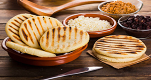

Baião de Dois
Contexto Histórico
O Baião de Dois é um prato típico do Nordeste do Brasil, vindo do Ceará. É um preparado de arroz e feijão, usado prefencialmente o feijão de corda.
O nome “baião” deriva de uma dança típica, um ritmo musical que foi muito difundido por Luiz zaga, que ficou conhecido nacionalmente como “O Rei do Baião”.
O Baião de Dois é um prato completo, ou seja, não precisa de acompanhamento. Para fazê-lo deve-se cozinhar o arroz no caldo do feijão já cozido e temperado, misturando o feijão cozido com o arroz na panela ainda no fogo, e depois de pronto adicionar.
Sua história remete aos tempos das grandes dificuldades do povo nordestino com as secas quando a comida era escassa e nada podia se estragar ou desperdiçar. Dessa forma, o povo uniu as sobras da cozinha, arroz e feijão com o pouco que tinha de carne seca e queijo de coalho, surgindo assim esse famoso prato da cozinha nordestina. Com o passar do tempo as receitas foram sendo adaptadas e diversificadas.

Ingredientes:
1/2 kg de feijão verde
1 paio cortado em rodelas
2 tabletes de caldo de carne
1 cebola ralada
1 dente de alho amassado
3 colheres (sopa) de óleo
1/2 colher (sopa) de coento picado
2 xícaras e 1/2 (chá) de arroz lavado e escorrido150 g de queijo de coalho cortado em fatias finas
MODO DE PREPARO:
Deixe o feijão de molho de véspera. No dia seguinte cozinhe-o juntamente com o caldo de carne e 2,5 litros de água fria.
Tampe a panela e deixe cozinhar em fogo baixo por aproximadamente 1 hora.
Em outra panela doure o paio, a cebola e o alho, no óleo. Junte o coento e o arroz e refogue bem. Acrescente o feijão já cozido, juntamente com o caldo. Misture bem, tampe a panela e deixe cozinhar até que o arroz fique cozido, úmido e com consistência cremosa.
Cubra o arroz com as fatias de queijo. Tampe a panela novamente e deixe que o vaporderreta o queijo.
Sirva acompanhado de carne-de-sol frita ou assada